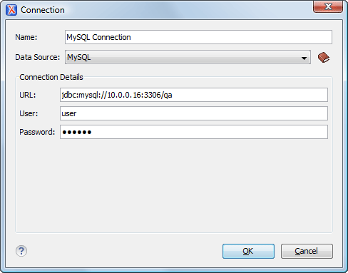

The dialog box for configuring a database connection is displayed.
Figure 1. Connection Configuration Dialog Box

Enter a unique name for the connection.
Select the MySQL data source in the Data Source drop-down
list.
Enter the connection details.
Enter the URL of the MySQL server.
Enter the user name for the connection to the MySQL server.
Enter the password for the connection to the MySQL server.
Click the OK button to finish the
connection configuration.
To view your connection, go to the Data Source Explorer view(if the view is not displayed, it can be opened by selecting
it from the Window > Show View menu) or switch to the
Databaseperspective.
 New button in the Connections panel.
New button in the Connections panel.